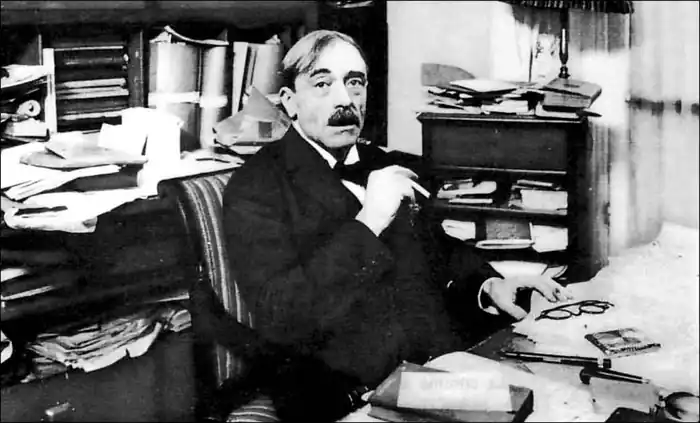
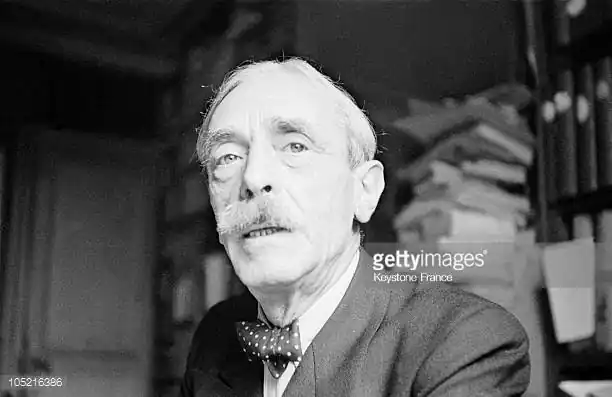
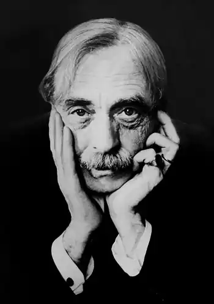

ВАЛЕРІ, Поль (Valery, Paul — 30.10.1871, Сет — 20.07.1945, Париж) — французький поет-символіст.Валері народився на півдні Франції у сім'ї корсиканського митника Бартоломея Валері та італійської дворянки Фанні Ґрассі. Освіту майбутній поет здобував спочатку в сетському колежі, який закінчив у 1888 р. Згодом вирішив продовжувати навчання у ліцеї в Монпельє. Проте система та методи освіти у цьому закладі справили негативне враження на таку неординарну особистість, яким був Поль. "Про літературу в них уявлення солдафонів. Тупість і безсердечність, мені здається, записані у програмі", — занотує згодом Валері. Попри те, що Валері продовжував вивчати право на юридичному факультеті, він уже усвідомив своє поетичне покликання. Саме в цей період Валері захопився поезією Ш. Бодлера та П. Верлена, А. Рембо та С. Малларме, познайомився з літераторами, зокрема з П. Луї та А. Жідом. Його літературному запалу не міг завадити навіть рік військової служби ("По неділях я рятую свою душу, пишучи вірші").
У 1890 р. в журналі П. Луї "Мушля" було опубліковано кілька віршів юного Валері, які в цілому критика зустріла схвально, хоча й зауважила, що вони позначені впливом С. Малларме. У 21 рік Валері без жодної конкретної мети чи якихось планів на майбутнє вирушив у Париж. Причиною такого несподіваного повороту в його житті, найімовірніше, була душевна криза, про що свідчать його ж власні спогади: "Мені було двадцять років, і я вірив у всемогутність думки. Якось дивно я страждав від власного буття чи небуття. Інколи я відчував у собі безмежні сили; через якісь проблеми вони знічувалися, і обмеженість можливостей доводила мене до відчаю. Я був похмурим, легковажним, лагідним ззовні, впертим у глибині душі, впадав у крайнощі, захоплювався безмежно, легко піддавався враженню, переконанню не піддавався ніколи... Я перестав писати вірші, я майже нічого не читав..."
Припускають, що саме читання Е. По навіяло Валері думку про досконале пізнання свого "я", прискіпливий аналіз усіх тих невидимих внутрішніх процесів, які керують людиною, про якомога адекватніше відтворення власних почуттів поетичною мовою. Тих зображально-виражальних засобів, які Валері перейняв від символістів, було недостатньо, і в результаті поет на цілих 20 років пішов у "монастир власної душі", щоб розробити самостійну художню систему, — щось на кшталт "нового класицизму", збагаченого методами, запозиченими із царини філософії та точних наук. Щоправда, були й суто "зовнішні" причини для такого неординарного рішення "найтемнішого поета Франції": восени 1892 р. Валері, гостюючи у свого дядька в Генуї, закохався у жінку, яку часто зустрічав на вулиці і з якою так і не зважився познайомитися. Переживши важку душевну кризу, в ніч із 4 на 5 жовтня під час страшної грози та безсоння він вирішив назавжди присвятити себе математиці. Але ще до цієї самоізоляції Валері зажив слави серед французьких літераторів рядом віршів, написаних у період 1891—1893 pp., які, однак, були видані окремою збіркою ("Альбом старих віршів "— "Album des vers anciens",) лише у 1920 p. Поезія раннього періоду творчості Валері засвідчила про прихід у літературу митця, який, відштовхуючись від пізньосимволістської тематики та образності, історичної алюзійності, майже знайшов свій шлях — шлях "витонченого (почасти гіпертрофованого) інтелектуалізму, який передбачав постійний контроль розумної волі над некерованою емоцією" (Ю. Стефанов). У першу чергу це стосується таких його ранніх віршів, як "Гелена" і "Орфей", "Народження Венери" і "Дружній гай". Класична простота і вишукана мова, висока версифікаторська майстерність і емоційна відстороненість проглядаються, приміром, у сонеті "Цезар":Спокійний Цезарю, все в тебе під стопою;Кулак у бороду — і в зорі вже вита Орлів загравний злет, танець меча й щита,А серце шириться і чується Судьбою.Хай озеро ряхтить рожевою габою,Хай золотіються ті наливні жита —В нутрі твоїм тугім рішучість вироста, Що розімкне вуста і гасло дасть до бою.(Тут і далі пер. М. Лукаша)Відмовившись від поезії, Валері, окрім вивчення математики та фізики (з часом він гордитиметься тим, що розумів найскладніші лекції Ейнштейна), здавалося, вів досить непоказне життя звичайного міщанина. Щоб заробити на прожиття, він влаштувався працювати у прес-бюро, потім — у Військове міністерство, де тривалий час перебував у відомстві артилерійського постачання, а згодом виконував обов'язки особистото секретаря директора телеграфного агентства "Гавас". "Усамітнення. Праця для себе. Записи, які збираються у папки. Одруження. Життя. Діти." — ці рядки з "Рукопису, виявленого у мозку" досить точно відтворюють (принаймні, зовнішньо) розміреність життя Валері. "Працею для себе" Валері вважав щоденні вранішні записи — т. зв. "Зошити", — які вів упродовж усього подальшого життя, тобто 51 рік. "Зошити" Валері — це болісні роздуми митця-інтелектуала про історію та культуру, релігію та прийоми творчості, психологію та соціологію, математику та поезію. Лише після смерті поета 29 з "Зошитів" були опубліковані (1957— 1961 pp.). "Праця для себе" — це й повість "Вечір із паном Тестом" (1896), головний герой якої —" проекція молодості Валері" (А. Моруа), і абстрактне втілення думки; це і прозовий етюд "Вступ у систему Леонардо да Вінчі" (1895), у якому Валері намагався вже з нової позиції — позиції "неслави" — осмислити світ і себе в ньому. У 1900 р. Поль Валері одружився з талановитою піаністкою, племінницею Е. Мане Жанною Гобійяр, яка народила йому двох дітей: дочку Агату (1906) і сина Франсуа (1915). Наполегливі кохання друзів (передусім А. Жіда) дозволити видати в одній збірці його давні вірші, а потім — редагування машинописних текстів помалу навернули Валері до поезії. У 1913 р. він розпочав роботу над поемою "Юна Парка" ("La jeune parque"), сподіваючись, що вона стане безповоротним прощанням з поезією. Проте творчий процес затягнувся аж до 1917 p., що пояснювалося надзвичайною вимогливістю Валері до поетичного слова: остаточній редакції поеми передувало понад сто її варіантів. Головною героїнею твору стала не давньоримська парка — одна із невмолимих богинь долі, як можна було сподіватися, — а юна дівчина, яка стоїть на межі Буття і Небуття. Вивищившись над своїм існуванням, зумівши відокремитися від власного тіла — непорушної "скелі плоті", юна парка (чи, радше, тепер уже звільнена її свідомість) опозиціювалася і до морської гладіні, і до Всесвіту, і до Буття. У 1920 р. В. написав один із своїх "найінтелектуальніших" віршів — "Морський цвинтар" ("Le cimetiere marin"), який викликав велику кількість літературознавчих тлумачень. "Морський цвинтар "побудований на контрастному зіставленні приморського цвинтаря і мінливого морського спокою: О чисте, праве! Глянь, і я мінюся!Я простору сяйному віддаюся:Всі гордощі втекли не знать куди,Всі лінощі (і це при буйних силах!)...Ось тінь моя снується по могилахІ вчить мене примарної ходи. Антитетичність вірша проявляється не тільки на зображально-виражальному, а й на більш прихованому ідейно-змістовому рівні. Опозиційні образні пари (цвинтар як "сумир богів" і "мінливі береги", "стрімкий сонцепал" і "полутінок у Нічім" тощо) ще більше підкреслюють гостроту і непримиренність конфлікту життя та смерті, спокою та руху, минущості "я" ліричного героя та вічності Всесвіту. Шукаючи компромісу та замирення, В. підсумовує: Вже вітер встав!.. Попробуємо жити!Гортає дмухом зошит мій розшитий,Прибій кипить, шпує між скельних брил!Летіть, летіть, засліплені сторінки!Штурмуйте, хвилі, весело і дзвінкоЦей тихий дах, це кльовище вітрил! У1922 р. поеми "Юна Парка" "Морський цвинтар" і "Піфія" були опубліковані у другій — і останній — поетичній збірці Валері "Зачарування". Слід зазначити, що хоча збірка була видана у незначній кількості і розповсюджувалася поміж представників художньої богеми, вона закріпила за Валері славу найкращого поета Франції, "інженера поезії". Цю славу Валері сприйняв дуже скромно, просто й іронічно, оскільки вважав, що після "Пана Теста" ("Monsieur Teste") та "Юної Парки" "решта — це шум". Після виходу друком "Зачарувань" (" Charmes") Валері назавжди порвав із поезією, вважаючи свою місію виконаною. У 1925 р. його вибрали членом Французької Академії на місце, яке звільнилося після смерті А. Франса. У своєму виступі-подяці Валері, зокрема, зауважив: "Щасливцями є ті письменники, які звільняють нас від тягаря думки і легкою рукою тчуть мерехтливі убори для складності сущого! На жаль, панове, деякі, за чиїм існуванням слід вельми жаліти, обрали прямо протилежний шлях. Роботу розуму вони спрямували стезею своїх насолод. Вони загадують нам загадки. Це нелюдяні істоти". Будучи надзвичайно популярним у колі редакторів і видавців, Валері в останні двадцять років свого життя багато публікувався, пишучи в основному на замовлення. У 1926 р. вийшла друком його книга афоризмів "Ромби", а наступного року — її продовження "Інші ромби". У 30-х pp. Валері очолив Середземноморський університетський центр у Ніцці, став професором поетики у Колеж де Франс. Завершальним акордом були мемуари, які підсумували творчість найвидатнішого і найоригінальнішого поета-символіста, і це попри те, що у 12-томному "Повному зібранні творів" Поля Валері поезія займає лише один том. Помер Валері у віці 74 роки, похований на морському цвинтарі у Сеті.Українською мовою окремі вірші Валері переклали М. Терещенко та М. Лукаш. Б. Щавурський